数据的逻辑结构
数据的逻辑结构指数据元素之间的逻辑关系（和实现无关）。
分类1：线性结构和非线性结构
线性结构：有且只有一个开始结点和一个终端结点，并且所有结点都最多只有一个直接前驱和一个直接后继。
线性表就是一个典型的线性结构，它有四个基本特征：
1．集合中必存在唯一的一个"第一个元素"；
2．集合中必存在唯一的一个"最后的元素"；
3．除最后元素之外，其它数据元素均有唯一的"后继"；
4．除第一元素之外，其它数据元素均有唯一的"前驱"。
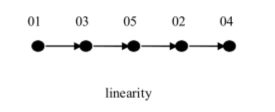
生活案例：冰糖葫芦、 排队上地铁


相对应于线性结构，非线性结构的逻辑特征是一个结点元素可能对应多个直接前驱和多个直接后继。
常见的非线性结构有：树(二叉树等)，图(网等)。
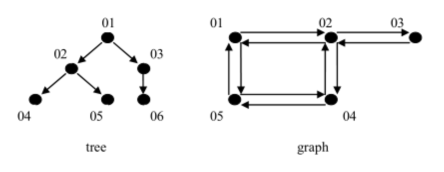
树：
生活案例：单位组织架构、族谱
技术案例：文件系统。
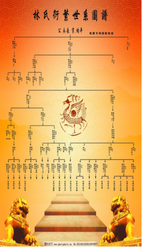 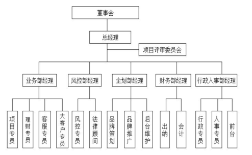
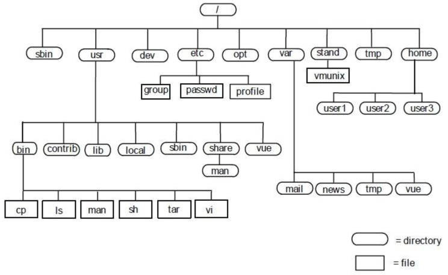
图：
生活案例：交通线路图，地铁图
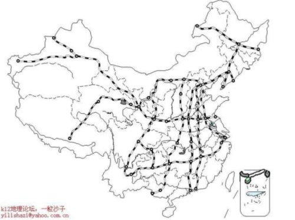 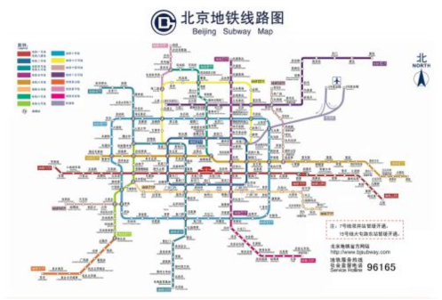
分类2：集合结构 线性结构 树状结构 网络结构
逻辑结构有四种基本类型：集合结构、线性结构、树状结构和网络结构。
表和树是最常用的两种高效数据结构，许多高效的算法能够用这两种数据结构来设计实现。
集合结构：就是数学中所学习的集合。集合中的元素有三个特征：
1).确定性（集合中的元素必须是确定的）
2).唯一性（集合中的元素互不相同。例如：集合A={1，a}，则a不能等于1）
3).无序性（集合中的元素没有先后之分），如集合{3,4,5}和{3,5,4}算作同一个集合
该结构的数据元素间的关系是“属于同一个集合”，别无其它关系。
因为集合中元素关系很弱，数据结构中不对该结构进行研究
线性结构：数据结构中线性结构指的是数据元素之间存在着“一对一”的线性关系的数据结构。
树状结构：除了一个数据元素（元素 01）以外每个数据元素有且仅有一个直接前驱元素，但是可以有多个直接后续元素。
特点是数据元素之间是 1 对 多的联系
网络结构：每个数据元素可以有多个直接前驱元素，也可以有多个直接后续元素。特点是数据元素之间是多对 多 的联系
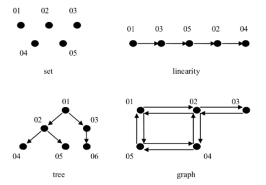
问题：1个班的学生是什么逻辑结构呢？
数据的存储结构
数据的存储结构主要包括数据元素本身的存储以及数据元素之间关系表示，是数据的逻辑结构在计算机中的表示。
常见的存储结构有顺序存储，链式存储，索引存储，以及散列存储。
顺序存储结构：把逻辑上相邻的节点存储在物理位置上相邻的存储单元中，结点之间的逻辑关系由存储单元的邻接关系来体现。
由此得到的存储结构为顺序存储结构，通常顺序存储结构是借助于计算机程序设计语言（例如C/C++）的数组来描述的。
（数据元素的存储对应于一块连续的存储空间，数据元素之间的前驱和后续关系通过数据元素，在存储器中的相对位置来反映）

优点：是节省存储空间，因为分配给数据的存储单元全用存放结点的数据（不考虑c/c++语言中数组需指定大小的情况），结点之间的逻辑关系没有占用额外的存储空间。
采用这种方法时，可实现对结点的随机存取，即每一个结点对应一个序号，由该序号可以直接计算出来结点的存储地址。
缺点：插入和删除操作需要移动元素，效率较低。
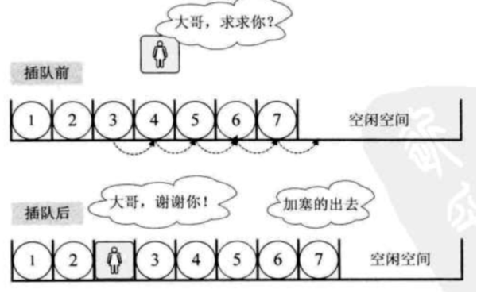
链式存储结构：数据元素的存储对应的是不连续的存储空间，每个存储节点对应一个需要存储的数据元素。
每个结点是由数据域和指针域组成。 元素之间的逻辑关系通过存储节点之间的链接关系反映出来。
特点：
1、比顺序存储结构的存储密度小 (每个节点都由数据域和指针域组成，所以相同空间内假设全存满的话顺序比链式存储更多)。
2、逻辑上相邻的节点物理上不必相邻。
3、插入、删除灵活 (不必移动节点，只要改变节点中的指针)。
4、查找结点时链式存储要比顺序存储慢。
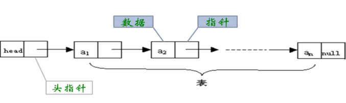
索引存储结构：除建立存储结点信息外，还建立附加的索引表来标识结点的地址。
比如图书、字典的目录
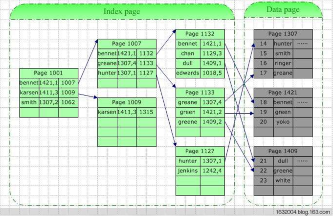
散列存储结构：根据结点的关键字直接计算出该结点的存储地址
一种神奇的结构，添加、查询速度快。
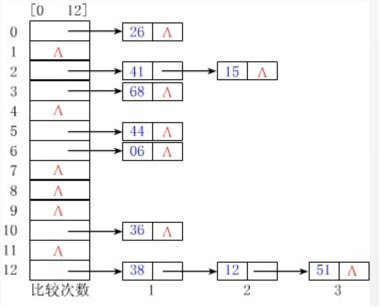
举例：
线性表的逻辑结构如图所示：
线性表逻辑结构对应的顺序存储结构为顺序表，对应的链式存储结构为链表。
顺序表
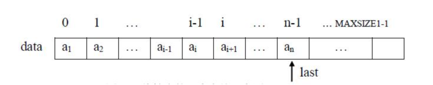
链表

同一逻辑结构可以对应多种存储结构。
同样的运算，在不同的存储结构中，其实现过程是不同的
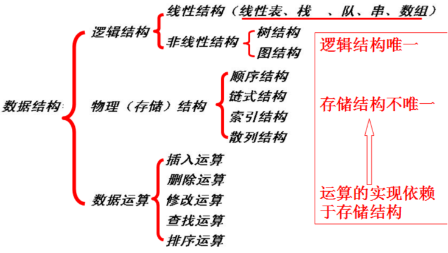